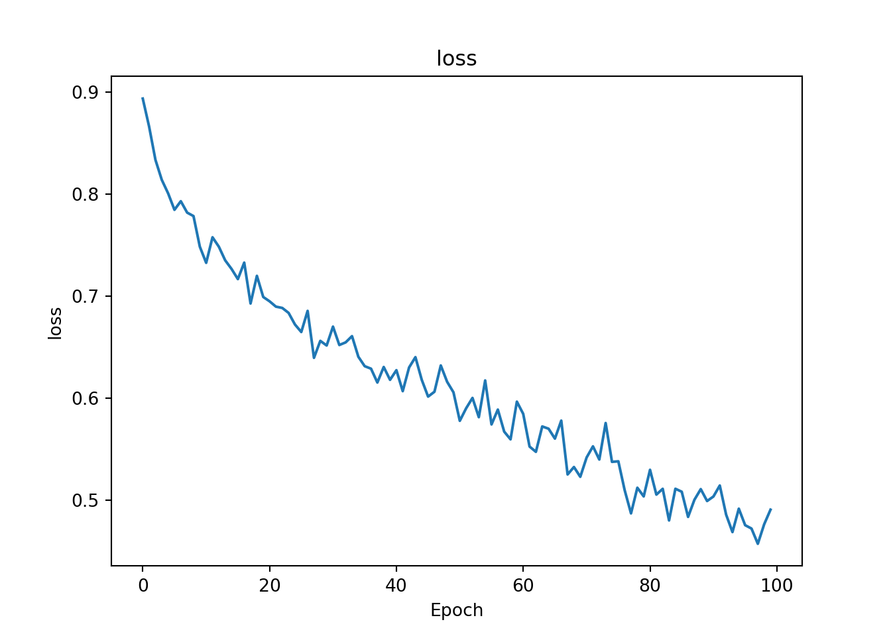
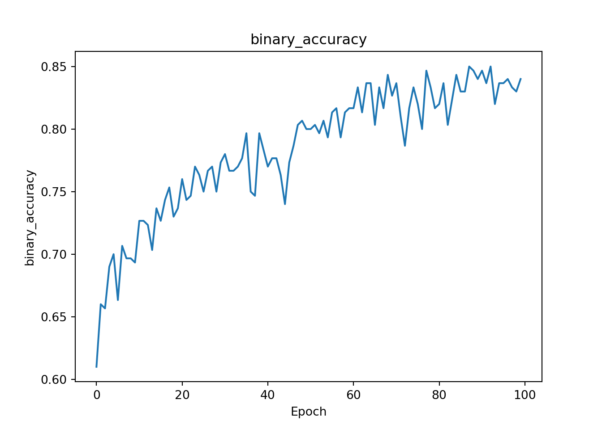
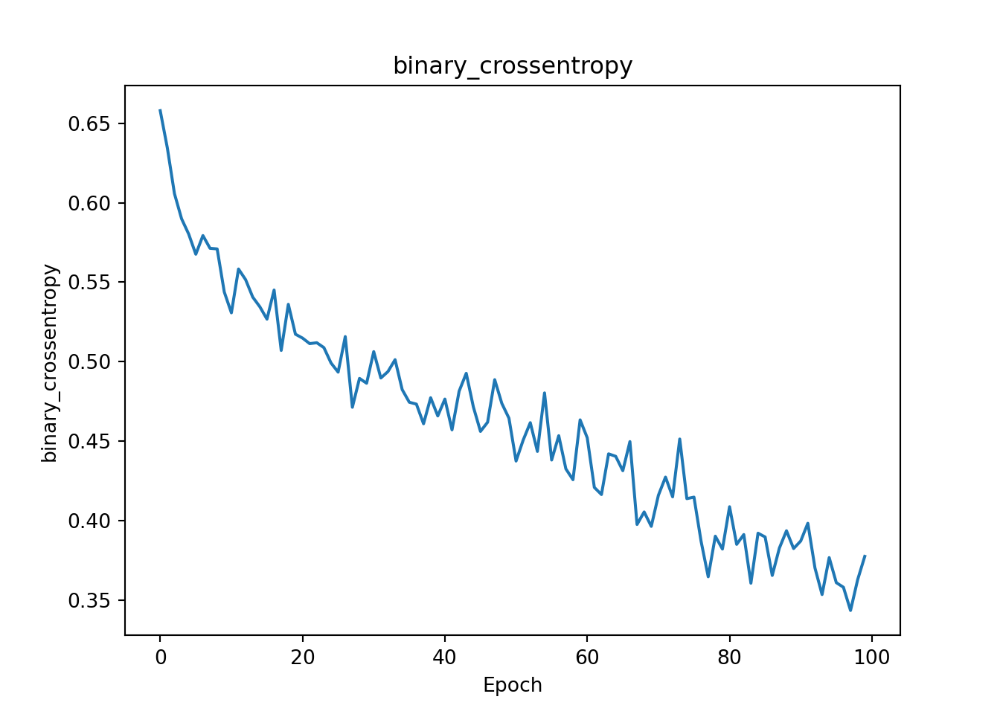
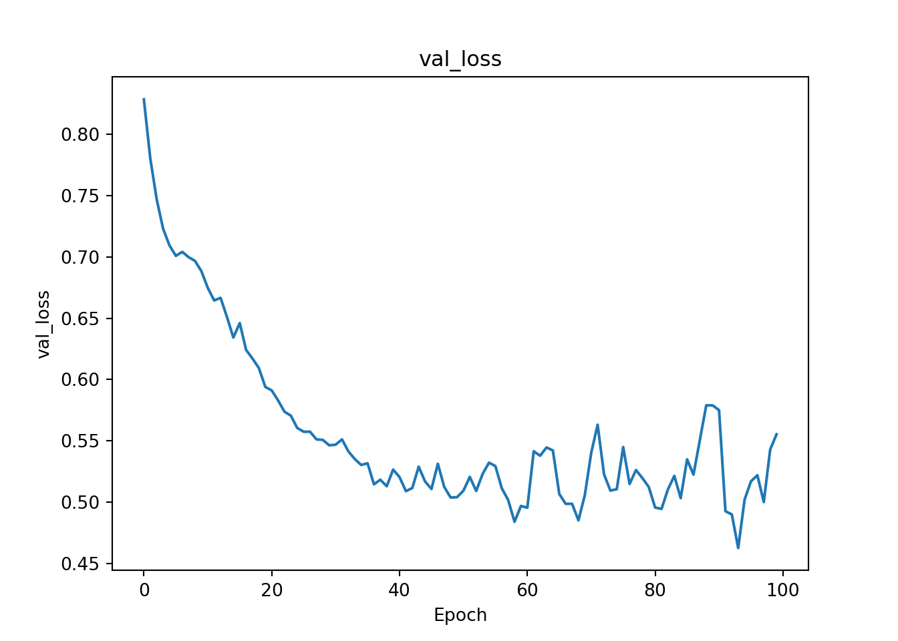
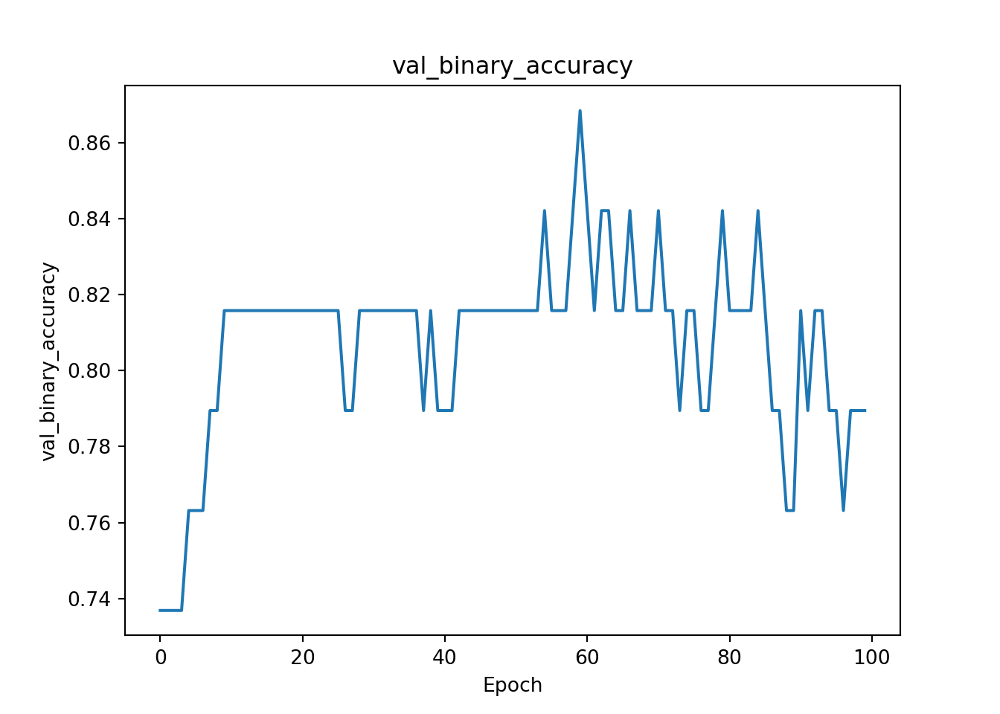
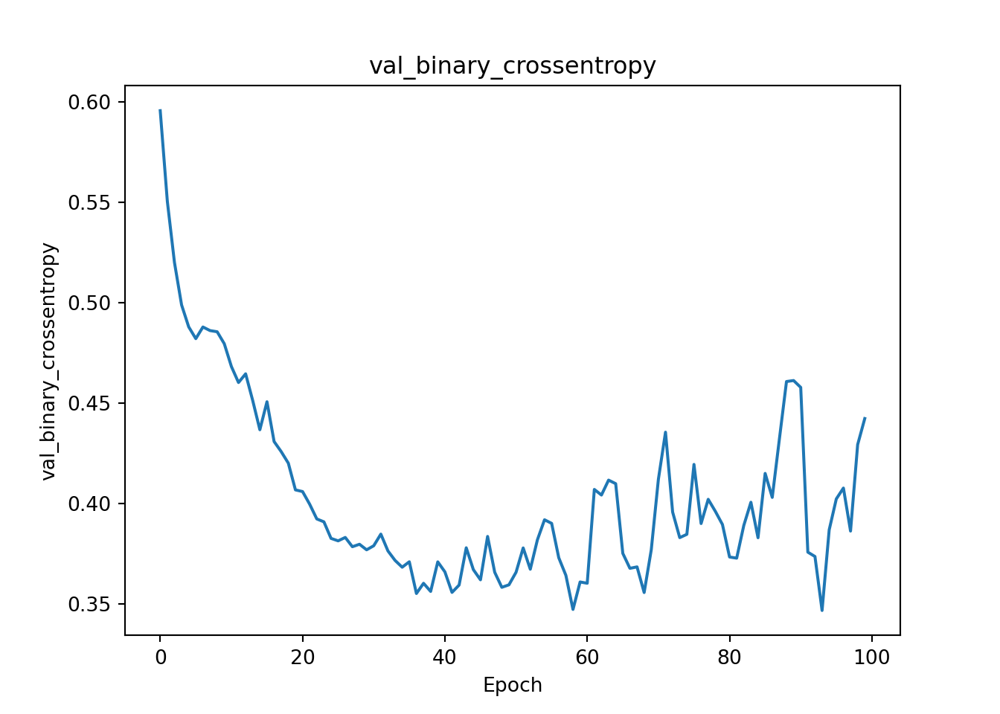

#library(tfclinical)library(ragg)library(reticulate)#use_virtualenv("C://Users//fil44768//OneDrive - GSK//Documents//.virtualenvs//gnn", required=TRUE)use_virtualenv("/Users/work/gnn", required =TRUE)# 1. Set the device to 'png' (which both R and Python understand)knitr::opts_chunk$set(dev ="png")# 2. Tell R to use ragg as the default engine for all png devicesoptions(device =function(...) ragg::agg_png(...))
Graphical Neural Network Model
Graphical Neural Networks are increasingly finding application in drug development beyond their historical major use case of prediction and classification of new potential drug molecules. Newer applications include extending to electronic patient records for prediction of future disease outcomes.
This example is ported from the original on Tensorflow GNN github site. Unlike other vignettes, a custom Python setup is required here for reticulate so as ensure correct version compatibility of tensorflow and tensorflow-gnn. See installation guide under advanced.
Needs compatible versions (installed via pip in venv hard coding versions):
Python: 3.11.14
Name: tf_keras
Version: 2.16.0
Name: tensorflow
Version: 2.16.2
Name: tensorflow-gnn
Version: 1.0.3
Python: 3.13.1
Name: tf_keras
Version: 2.20.1
Name: tensorflow
Version: 2.20.0
Name: tensorflow-gnn
Version: 1.0.3
Code
import osos.environ["TF_USE_LEGACY_KERAS"] ="1"# For TF2.16+.import matplotlib.pyplot as pltimport numpy as npimport tensorflow as tfimport tensorflow_gnn as tfgnn#print(f'Running TF-GNN {tfgnn.__version__} with TensorFlow {tf.__version__}.')
Code
train_path = os.path.join(os.getcwd(), 'data/mutag', 'train.tfrecords')val_path = os.path.join(os.getcwd(), 'data/mutag', 'val.tfrecords')#get_ipython().system('ls -l {train_path} {val_path}')print(f" the train path={train_path}")#> the train path=/Users/work/asia/ml/data/mutag/train.tfrecords#exit()
def decode_fn(record_bytes): graph = tfgnn.parse_single_example( graph_tensor_spec, record_bytes, validate=True)# extract label from context and remove from input graph context_features = graph.context.get_features_dict() label = context_features.pop('label') new_graph = graph.replace_features(context=context_features)return new_graph, label# In[7]:train_ds = tf.data.TFRecordDataset([train_path]).map(decode_fn)val_ds = tf.data.TFRecordDataset([val_path]).map(decode_fn)count = train_ds.reduce(tf.constant(0), lambda x, _: x +1)print(f"number of training record={count}\n")#> number of training record=150countval = val_ds.reduce(tf.constant(0), lambda x, _: x +1)print(f"number of validation record={countval}\n")#> number of validation record=38# ### Look at one example from the dataset# In[8]:g, y = train_ds.take(1).get_single_element()# #### Node features# # Node features represent the 1-hot encoding of the atom type (0=C, 1=N, 2=O, 3=F,# 4=I, 5=Cl, 6=Br).# In[9]:print(f"g.node_sets['atoms'].features[tfgnn.HIDDEN_STATE]=\n{g.node_sets['atoms'].features[tfgnn.HIDDEN_STATE]}")#> g.node_sets['atoms'].features[tfgnn.HIDDEN_STATE]=#> [[1. 0. 0. 0. 0. 0. 0.]#> [1. 0. 0. 0. 0. 0. 0.]#> [1. 0. 0. 0. 0. 0. 0.]#> [1. 0. 0. 0. 0. 0. 0.]#> [1. 0. 0. 0. 0. 0. 0.]#> [1. 0. 0. 0. 0. 0. 0.]#> [0. 1. 0. 0. 0. 0. 0.]#> [0. 0. 1. 0. 0. 0. 0.]#> [0. 0. 1. 0. 0. 0. 0.]#> [0. 1. 0. 0. 0. 0. 0.]#> [0. 0. 0. 0. 0. 0. 1.]#> [0. 1. 0. 0. 0. 0. 0.]#> [0. 0. 1. 0. 0. 0. 0.]#> [0. 0. 1. 0. 0. 0. 0.]]# #### Bond Edges# # In this example, we consider the bonds between atoms undirected edges. To encode# them in the GraphsTuple, we store the undirected edges as pairs of directed# edges in both directions.# # `adjacency.source` contains the source node indices, and `adjacency.target` contains the corresponding target node indices.# In[10]:print(f"g.edge_sets['bonds'].adjacency.source=\n{g.edge_sets['bonds'].adjacency.source}")#> g.edge_sets['bonds'].adjacency.source=#> [ 0 0 1 1 1 2 2 3 3 3 4 4 4 5 5 5 6 6 6 7 8 9 10 11#> 11 11 12 13]#g.edge_sets['bonds'].adjacency.source# In[11]:print(f"g.edge_sets['bonds'].adjacency.target=\n{g.edge_sets['bonds'].adjacency.target}")#> g.edge_sets['bonds'].adjacency.target=#> [ 1 5 0 2 11 1 3 2 4 10 3 5 9 0 4 6 5 7 8 6 6 4 3 1#> 12 13 11 11]#g.edge_sets['bonds'].adjacency.target# #### Edge features# # Edge features represent the bond type as one-hot encoding.# In[12]:print(f"g.edge_sets['bonds'].features[tfgnn.HIDDEN_STATE]=\n{g.edge_sets['bonds'].features[tfgnn.HIDDEN_STATE]}")#> g.edge_sets['bonds'].features[tfgnn.HIDDEN_STATE]=#> [[1. 0. 0. 0.]#> [1. 0. 0. 0.]#> [1. 0. 0. 0.]#> [1. 0. 0. 0.]#> [0. 1. 0. 0.]#> [1. 0. 0. 0.]#> [1. 0. 0. 0.]#> [1. 0. 0. 0.]#> [1. 0. 0. 0.]#> [0. 1. 0. 0.]#> [1. 0. 0. 0.]#> [1. 0. 0. 0.]#> [0. 1. 0. 0.]#> [1. 0. 0. 0.]#> [1. 0. 0. 0.]#> [0. 1. 0. 0.]#> [0. 1. 0. 0.]#> [0. 0. 1. 0.]#> [0. 1. 0. 0.]#> [0. 0. 1. 0.]#> [0. 1. 0. 0.]#> [0. 1. 0. 0.]#> [0. 1. 0. 0.]#> [0. 1. 0. 0.]#> [0. 0. 1. 0.]#> [0. 1. 0. 0.]#> [0. 0. 1. 0.]#> [0. 1. 0. 0.]]#g.edge_sets['bonds'].features[tfgnn.HIDDEN_STATE]# ### Label# The label is binary, indicating the mutagenicity of the molecule. It's either 0 or 1.# In[13]:print(f"\nthe label={y}")#> #> the label=[0]
Code
#for k, hist in history.history.items():# plt.plot(hist)# plt.title(k)# plt.show()for k, hist in history.history.items(): plt.figure() # Create a new figure for each metric plt.plot(hist) plt.title(k) plt.xlabel('Epoch') plt.ylabel(k)# Save the plot. Using f-strings to name the file based on the key (e.g., loss.png)#plt.savefig(f"precomputed/pyplot_{k}.png")# Optional: If you want to show it in the console while running plt.show()






Code
#plt.close() # Feel free to play with the hyperparameters and the model architecture to improve the results!
the end
Source Code
---title: "tf_gnn_example"output: rmarkdown::html_vignette: toc: true toc_depth: 2 number_sections: truevignette: > %\VignetteIndexEntry{tf_gnn_example} %\VignetteEngine{knitr::rmarkdown} %\VignetteEncoding{UTF-8}---```{r, include = FALSE}knitr::opts_chunk$set(collapse =TRUE,comment ="#>")# Check if running on GitHub Actions# This is important as otherwise Github will attempt to build this and it's missing the python libraries and will fail#on_github <- Sys.getenv("GITHUB_ACTIONS") == "true"# If on GitHub, set eval = FALSE for all subsequent chunks#knitr::opts_chunk$set(eval = !on_github)``````{r setup, eval=TRUE}#library(tfclinical)library(ragg)library(reticulate)#use_virtualenv("C://Users//fil44768//OneDrive - GSK//Documents//.virtualenvs//gnn", required=TRUE)use_virtualenv("/Users/work/gnn", required =TRUE)# 1. Set the device to 'png' (which both R and Python understand)knitr::opts_chunk$set(dev ="png")# 2. Tell R to use ragg as the default engine for all png devicesoptions(device =function(...) ragg::agg_png(...))```## Graphical Neural Network ModelGraphical Neural Networks are increasingly finding application in drug development beyond their historical major use case of prediction and classification of new potential drug molecules. Newer applications include extending to electronic patient records for prediction of future disease outcomes.This example is ported from the [original on Tensorflow GNN github site](https://colab.research.google.com/github/tensorflow/gnn/blob/master/examples/notebooks/intro_mutag_example.ipynb). Unlike other vignettes, a custom Python setup is required here for reticulate so as ensure correct version compatibility of tensorflow and tensorflow-gnn. See installation guide under advanced.Needs compatible versions (installed via pip in venv hard coding versions):- Python: 3.11.14- Name: tf_keras - Version: 2.16.0- Name: tensorflow - Version: 2.16.2- Name: tensorflow-gnn - Version: 1.0.3- Python: 3.13.1- Name: tf_keras - Version: 2.20.1- Name: tensorflow - Version: 2.20.0- Name: tensorflow-gnn - Version: 1.0.3```{python chunkpy1,include=TRUE, echo=TRUE,eval=TRUE}import osos.environ["TF_USE_LEGACY_KERAS"] ="1"# For TF2.16+.import matplotlib.pyplot as pltimport numpy as npimport tensorflow as tfimport tensorflow_gnn as tfgnn#print(f'Running TF-GNN {tfgnn.__version__} with TensorFlow {tf.__version__}.')``````{python chunkpy11,include=TRUE, echo=TRUE,eval=TRUE}train_path = os.path.join(os.getcwd(), 'data/mutag', 'train.tfrecords')val_path = os.path.join(os.getcwd(), 'data/mutag', 'val.tfrecords')#get_ipython().system('ls -l {train_path} {val_path}')print(f" the train path={train_path}")#exit()``````{python chunkpy111,include=TRUE, echo=TRUE,eval=TRUE}graph_tensor_spec = tfgnn.GraphTensorSpec.from_piece_specs( context_spec=tfgnn.ContextSpec.from_field_specs(features_spec={'label': tf.TensorSpec(shape=(1,), dtype=tf.int32) }), node_sets_spec={'atoms': tfgnn.NodeSetSpec.from_field_specs( features_spec={ tfgnn.HIDDEN_STATE: tf.TensorSpec((None, 7), tf.float32) }, sizes_spec=tf.TensorSpec((1,), tf.int32)) }, edge_sets_spec={'bonds': tfgnn.EdgeSetSpec.from_field_specs( features_spec={ tfgnn.HIDDEN_STATE: tf.TensorSpec((None, 4), tf.float32) }, sizes_spec=tf.TensorSpec((1,), tf.int32), adjacency_spec=tfgnn.AdjacencySpec.from_incident_node_sets('atoms', 'atoms')) })``````{python chunkpy113,include=TRUE, echo=TRUE,eval=TRUE}def decode_fn(record_bytes): graph = tfgnn.parse_single_example( graph_tensor_spec, record_bytes, validate=True)# extract label from context and remove from input graph context_features = graph.context.get_features_dict() label = context_features.pop('label') new_graph = graph.replace_features(context=context_features)return new_graph, label# In[7]:train_ds = tf.data.TFRecordDataset([train_path]).map(decode_fn)val_ds = tf.data.TFRecordDataset([val_path]).map(decode_fn)count = train_ds.reduce(tf.constant(0), lambda x, _: x +1)print(f"number of training record={count}\n")countval = val_ds.reduce(tf.constant(0), lambda x, _: x +1)print(f"number of validation record={countval}\n")# ### Look at one example from the dataset# In[8]:g, y = train_ds.take(1).get_single_element()# #### Node features# # Node features represent the 1-hot encoding of the atom type (0=C, 1=N, 2=O, 3=F,# 4=I, 5=Cl, 6=Br).# In[9]:print(f"g.node_sets['atoms'].features[tfgnn.HIDDEN_STATE]=\n{g.node_sets['atoms'].features[tfgnn.HIDDEN_STATE]}")# #### Bond Edges# # In this example, we consider the bonds between atoms undirected edges. To encode# them in the GraphsTuple, we store the undirected edges as pairs of directed# edges in both directions.# # `adjacency.source` contains the source node indices, and `adjacency.target` contains the corresponding target node indices.# In[10]:print(f"g.edge_sets['bonds'].adjacency.source=\n{g.edge_sets['bonds'].adjacency.source}")#g.edge_sets['bonds'].adjacency.source# In[11]:print(f"g.edge_sets['bonds'].adjacency.target=\n{g.edge_sets['bonds'].adjacency.target}")#g.edge_sets['bonds'].adjacency.target# #### Edge features# # Edge features represent the bond type as one-hot encoding.# In[12]:print(f"g.edge_sets['bonds'].features[tfgnn.HIDDEN_STATE]=\n{g.edge_sets['bonds'].features[tfgnn.HIDDEN_STATE]}")#g.edge_sets['bonds'].features[tfgnn.HIDDEN_STATE]# ### Label# The label is binary, indicating the mutagenicity of the molecule. It's either 0 or 1.# In[13]:print(f"\nthe label={y}")``````{python alltherest,include=FALSE,echo=TRUE, eval=TRUE}batch_size =32train_ds_batched = train_ds.batch(batch_size=batch_size).repeat()val_ds_batched = val_ds.batch(batch_size=batch_size)# ### Build the GNN model# # TF-GNN provides Keras layers for building graph neural networks. The following code uses Keras' [Functional API](https://www.tensorflow.org/guide/keras/functional) to build a model as a series of GraphTensor transformations, followed by reading out a plain Tensor with the final prediction.# In[15]:def _build_model( graph_tensor_spec,# Dimensions of initial states. node_dim=16, edge_dim=16,# Dimensions for message passing. message_dim=64, next_state_dim=64,# Dimension for the logits. num_classes=2,# Number of message passing steps. num_message_passing=3,# Other hyperparameters. l2_regularization=5e-4, dropout_rate=0.5,):# Model building with Keras's Functional API starts with an input object# (a placeholder for the eventual inputs). Here is how it works for# GraphTensors: input_graph = tf.keras.layers.Input(type_spec=graph_tensor_spec)# IMPORTANT: All TF-GNN modeling code assumes a GraphTensor of shape []# in which the graphs of the input batch have been merged to components of# one contiguously indexed graph. (There are no edges between components,# so no information flows between them.) graph = input_graph.merge_batch_to_components()# Nodes and edges have one-hot encoded input features. Sending them through# a Dense layer effectively does a lookup in a trainable embedding table.def set_initial_node_state(node_set, *, node_set_name):# Since we only have one node set, we can ignore node_set_name.return tf.keras.layers.Dense(node_dim)(node_set[tfgnn.HIDDEN_STATE])def set_initial_edge_state(edge_set, *, edge_set_name):return tf.keras.layers.Dense(edge_dim)(edge_set[tfgnn.HIDDEN_STATE]) graph = tfgnn.keras.layers.MapFeatures( node_sets_fn=set_initial_node_state, edge_sets_fn=set_initial_edge_state)( graph)# This helper function is just a short-hand for the code below.def dense(units, activation="relu"):"""A Dense layer with regularization (L2 and Dropout).""" regularizer = tf.keras.regularizers.l2(l2_regularization)return tf.keras.Sequential([ tf.keras.layers.Dense( units, activation=activation, kernel_regularizer=regularizer, bias_regularizer=regularizer), tf.keras.layers.Dropout(dropout_rate) ])# The GNN core of the model does `num_message_passing` many updates of node# states conditioned on their neighbors and the edges connecting to them.# More precisely:# - Each edge computes a message by applying a dense layer `message_fn`# to the concatenation of node states of both endpoints (by default)# and the edge's own unchanging feature embedding.# - Messages are summed up at the common TARGET nodes of edges.# - At each node, a dense layer is applied to the concatenation of the old# node state with the summed edge inputs to compute the new node state.# Each iteration of the for-loop creates new Keras Layer objects, so each# round of updates gets its own trainable variables.for i inrange(num_message_passing): graph = tfgnn.keras.layers.GraphUpdate( node_sets={"atoms": tfgnn.keras.layers.NodeSetUpdate( {"bonds": tfgnn.keras.layers.SimpleConv( sender_edge_feature=tfgnn.HIDDEN_STATE, message_fn=dense(message_dim), reduce_type="sum", receiver_tag=tfgnn.TARGET)}, tfgnn.keras.layers.NextStateFromConcat(dense(next_state_dim)))} )(graph)# After the GNN has computed a context-aware representation of the "atoms",# the model reads out a representation for the graph as a whole by averaging# (pooling) nde states into the graph context. The context is global to each# input graph of the batch, so the first dimension of the result corresponds# to the batch dimension of the inputs (same as the labels). readout_features = tfgnn.keras.layers.Pool( tfgnn.CONTEXT, "mean", node_set_name="atoms")(graph)# Put a linear classifier on top (not followed by dropout). logits = tf.keras.layers.Dense(1)(readout_features)# Build a Keras Model for the transformation from input_graph to logits.return tf.keras.Model(inputs=[input_graph], outputs=[logits])# #### Define Loss and Metrics# In[16]:model_input_graph_spec, label_spec = train_ds.element_specdel label_spec # Unused.model = _build_model(model_input_graph_spec)# In[17]:loss = tf.keras.losses.BinaryCrossentropy(from_logits=True)metrics = [tf.keras.metrics.BinaryAccuracy(threshold=0.), tf.keras.metrics.BinaryCrossentropy(from_logits=True)]# newcallbacks = [ tf.keras.callbacks.EarlyStopping(monitor='val_loss', patience=10, restore_best_weights=True), tf.keras.callbacks.ReduceLROnPlateau(monitor='val_loss', factor=0.2, patience=5)]# #### Compile the keras model# In[18]:model.compile(tf.keras.optimizers.Adam(), loss=loss, metrics=metrics)# In[19]:model.summary()# #### Train the model# In[20]:with tf.device('/CPU:0'): history = model.fit(train_ds_batched, steps_per_epoch=10, epochs=100, validation_data=val_ds_batched#, ) #callbacks=callbacks)# ### Plot the loss and metric curves for train and val# In[ ]:``````{python, dev="png", eval=TRUE}#for k, hist in history.history.items():# plt.plot(hist)# plt.title(k)# plt.show()for k, hist in history.history.items(): plt.figure() # Create a new figure for each metric plt.plot(hist) plt.title(k) plt.xlabel('Epoch') plt.ylabel(k)# Save the plot. Using f-strings to name the file based on the key (e.g., loss.png)#plt.savefig(f"precomputed/pyplot_{k}.png")# Optional: If you want to show it in the console while running plt.show() #plt.close() # Feel free to play with the hyperparameters and the model architecture to improve the results!```## the end